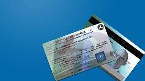

-Kinds of pilot license

- Private Pilot License(PPL)
- Commercial Pilot License(CPL)
- Airline Tranport Pilot License(ATP)

1. Private Pilot License.
- A private pilot is one who flies for pleasure or personal
- Pass the required practical test business without accepting compensation for flying except.
- Obtain a third-class medical certificate issued under in some very limited, specific circumstances.
The Private 14 CFR part 67 Pilot Certificate is the certificate held by the majority of 1-17 active pilots. It allows command of any aircraft (subject to appropriate ratings) for any noncommercial purpose and gives almost unlimited authority to fly under VFR. Passengers may be carried and flight in furtherance of a business is permitted; however, a private pilot may not be compensated in any way for services as a pilot, although passengers can pay a pro rata share of flight expenses, such as fuel or rental costs. If training under 14 CFR part 61, experience requirements include at least 40 hours of piloting time, including 20 hours of flight with an instructor and 10 hours of solo flight

2. Commercial Pilot License.
- A commercial pilot may be compensated for flying.
- Training for the certificate focuses on a better understanding of aircraft systems and a higher standard of airmanship.
The Commercial Pilot Certificate itself does not allow a pilot to fly in instrument meteorological conditions (IMC), and commercial pilots without an instrument rating are restricted to daytime flight within 50 NM when flying for hire.
A commercial airplane pilot must be able to operate a complex airplane, as a specific number of hours of complex (or turbine-powered) aircraft time are among the prerequisites, and at least a portion of the practical examination is performed in a complex aircraft. A complex aircraft must have retractable landing gear, movable flaps, and a controllable-pitch propeller. See 14 CFR part 61, section 61.31(e) for additional information.

3.Airline Transport Pilot License
- The airline transport pilot (ATP) is tested to the highest level of piloting ability.
- The ATP certificate is a prerequisite for serving as a PIC and second in command (SIC) of scheduled airline operations.
It is also a prerequisite for serving as a PIC in select charter and fractional operations. The minimum pilot experience is 1,500 hours of flight time. In addition, the pilot must be at least 23 years of age, be able to read, write, speak,and understand the English language, and be “of good moral standing.” A pilot may obtain an ATP certificate with restricted privileges enabling him/her to serve as an SIC in scheduled airline operations. The minimum pilot experience is reduced based upon specific academic and flight training experience. The minimum age to be eligible is 21 years.